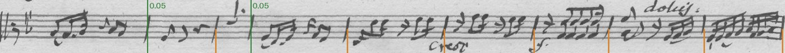
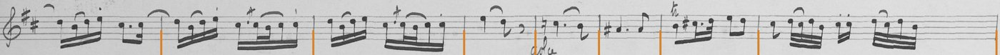
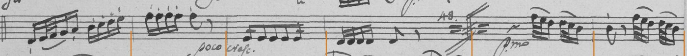
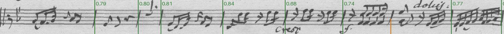
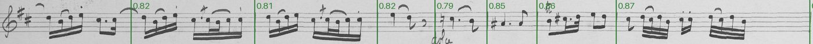
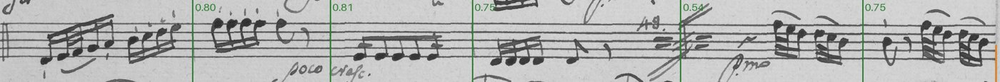
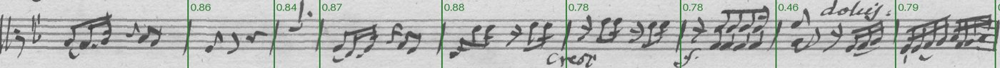
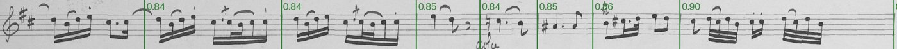
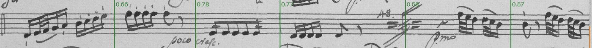

YOLO26nretired
Ultralytics' newest small detector, fine-tuned to box bar lines on tiles of the straightened lines.
Ultralytics YOLO26 docs · Ultralytics licensing · our training script
Model card
- Architecture
- YOLO26 nano: single-stage detector, end to end (no NMS step), small-target-aware label assignment
- Parameters
- about 2.4 million (published)
- Starting weights
- yolo26n.pt, COCO-pretrained (Ultralytics)
- Licence
- AGPL-3.0 (Ultralytics); fine for the editor's own use, not bundled with the MIT labeler
- Input
- a 640 px tile of a straightened staff line, 3 staff spaces above and below
- Output
- boxes with confidences; a bar line is the centre of a box above the threshold
- Where it runs
- in the labeler's bar-line vote from 2026-10-07 (cached by tools/predict_barlines.py); retired 2026-10-08 for YOLO26n with staff ends
- Training time
- 79 minutes
- Per line
- 50 ms on this Mac
- Weights file
- 5.4 MB
Data that went into it
Every counted staff line on the editor's reviewed music pages, straightened along the editor's bend, with the editor's bar lines as the truth. Lines are split at random (seed 1), stratified by source; the test lines are never trained on. Cells: lines / bar lines.
| hand | source | part | pages | train | validation | test |
|---|---|---|---|---|---|---|
| KHM | D-B_KHM-602 | Viola | 3 | 18 / 147 | 1 / 9 | 6 / 42 |
| KHM | D-B_KHM-602 | Cello | 3 | 17 / 143 | 2 / 15 | 5 / 41 |
| KHM | D-B_KHM-602 | Violin I | 3 | 21 / 136 | 2 / 12 | 7 / 53 |
| KHM | D-B_KHM-602 | Violin II | 3 | 19 / 150 | 4 / 29 | 3 / 23 |
| KHM | D-B_KHM-603 | Viola | 4 | 21 / 118 | 1 / 7 | 4 / 27 |
| KHM | D-B_KHM-603 | Cello | 4 | 16 / 97 | 2 / 12 | 7 / 43 |
| KHM | D-B_KHM-603 | Violin I | 4 | 22 / 121 | 1 / 6 | 5 / 25 |
| KHM | D-B_KHM-603 | Violin II | 4 | 22 / 112 | 1 / 3 | 6 / 33 |
| Paris A | F-Po_RES-507-14 | Cello | 4 | 15 / 132 | 1 / 12 | 5 / 38 |
| Paris A | F-Po_RES-507-14 | Violin I | 4 | 18 / 137 | 3 / 23 | 4 / 30 |
| Paris B | F-Po_RES-507-14 | Viola | 3 | 16 / 114 | 4 / 32 | 6 / 44 |
| Paris B | F-Po_RES-507-14 | Violin II | 3 | 20 / 139 | 3 / 18 | 5 / 32 |
| all | 42 | 225 / 1546 | 25 / 178 | 63 / 431 |
Tiles 640 px wide (stepping 480) of the straightened lines, at the labeler's render size, each bar line a box the staff's height and a staff space wide. A tenth of the training lines are validation: early stopping, the confidence threshold. The test lines are never seen. Tiles: 1058 training, 115 validation.
- sources/G226/D-B_KHM-602.pdf: labels at 96c0e3c 2026-10-07
- sources/G227/D-B_KHM-603.pdf: labels at 8fd9a4d 2026-10-02
- sources/G228/F-Po_RES-507-14.pdf: labels at 96c0e3c 2026-10-07
KHM: D-B KHM 602 and 603 (Op. 48 Nos. 1, 2), one copyist · Paris A: F-Po RES 507 (14) (No. 3), Violin I and Cello: one paper and hand · Paris B: F-Po RES 507 (14), Violin II and Viola: another paper and hand
How training works
Training starts from weights already trained on COCO's everyday photographs and adjusts all of them to one class, "bar line". Each epoch shows the network every training tile once, with random changes (shifts, scaling, colour, mosaics of four tiles) so it learns the stroke rather than the tiles. After each epoch it is scored on the validation tiles; the best epoch's weights are kept.
YOLO26 differs from YOLO11 mainly in training: it predicts one box per object directly (no overlap suppression afterwards), drops the box-shape distribution loss, and assigns small objects to the network's outputs with more care, which suits strokes 2-4 pixels wide.
Settings
- epochs
- 50
- patience
- 25
- batch
- 16
- imgsz
- 640
- optimizer
- AdamW
- lr0
- 0.002
- lrf
- 0.01
- momentum
- 0.937
- weight_decay
- 0.0005
- warmup_epochs
- 3.0
- fliplr
- 0.5
- mosaic
- 1.0
- close_mosaic
- 10
- translate
- 0.1
- scale
- 0.5
- hsv_h
- 0.015
- hsv_s
- 0.7
- hsv_v
- 0.4
- erasing
- 0.4
- device
- mps
- seed
- 0
The losses
- What a loss is
- A number the training lowers, batch by batch, by adjusting the network's weights: how far its boxes and scores on the training tiles are from the editor's. It has no units (it's built from overlaps and log-probabilities); only its trend and the gap between training and validation mean anything. The validation losses are the same numbers on tiles it never trains on: if they stop falling while the training ones keep going, it is memorising.
- Box loss
- 1 − CIoU for each box matched to a bar line: the overlap, less penalties for the distance between centres and the difference in shape. 0 when a box sits exactly on the truth. Weighted 7.5 in the total.
- Class loss
- Binary cross-entropy of the "bar line" score at every place the network looks: low when it is confident where there is a bar line and quiet where there isn't. Weighted 0.5.
- Shape loss (DFL, YOLO11)
- YOLO11 predicts each box edge as a distribution over positions; this loss pulls those towards the true edge. YOLO26 drops it and predicts edges directly.
- How it relates to our goal
- Most of the box loss is about the box's top, bottom and width, which we don't use; the class loss and the box's horizontal centre are what decide whether a bar line is found. That's why the card also shows our measure on the validation lines at each saved checkpoint.
Training
- recall
- precision
- mAP50 (found, loosely boxed)
- mAP50-95 (box tightness)
Per validation tile, at Ultralytics' own settings; see Terms. Ticks along the top mark the end of each epoch.
- train box
- validation box
- train class
- validation class
Trained 50 epochs in 79 minutes. The best epoch (Ultralytics' fitness: mostly box tightness) was 50. Over the last 5 epochs recall moved -0.008 and mAP50-95 +0.009: still improving, so a longer run may help a little.
- errors (false + missed)
- false
- missed
The first checkpoint (epoch 1, 2 min) is off the scale: 0 false, 145 missed. Each checkpoint at the confidence threshold best for it on these lines.
- on a bar line (177)
- not on a bar line (18)
Detections below 0.05 aren't reported. 1 bar line had no detection near it at all. Detections right of the threshold are kept: blue ones are found bar lines, orange ones false bar lines; blue left of it are bar lines missed at this threshold. The wider the empty gap between the colours, the less the threshold matters.
What it found during training
One validation line per hand at the first, middle and last checkpoint: found (with confidence) false missed (lower half).









Results on the test lines
A prediction counts if within 0.6% of the page width of one of the editor's bar lines (one to one). Errors are false bar lines (a delete) plus missed ones (a click). Confidence threshold 0.25, chosen on validation lines; 50 ms per line on this Mac.
| hand | errors |
|---|---|
| KHM | 12 (7 false, 5 missed; 4.2 per 100) |
| Paris A | 2 (2 false, 0 missed; 2.9 per 100) |
| Paris B | 2 (2 false, 0 missed; 2.6 per 100) |
| all | 16 (11 false, 5 missed; 3.7 per 100) |
Terms
- Found, false, missed
- Our measure, and the one that matters: a bar line is found if the model puts one within 0.6% of the page width (about a staff space) of the editor's; a false one is a bar line where the editor has none (a delete in the labeler), a missed one an editor's bar line with none near it (a click). Errors = false + missed.
- Confidence
- The detector's score, 0 to 1, that a box holds a bar line. Every box comes with one; we keep the boxes above a threshold, chosen on the validation lines to make the fewest errors.
- Precision, recall
- Of the boxes kept, the share that are bar lines (precision); of the bar lines, the share that were boxed (recall). Ultralytics reports them per validation tile at its own confidence cut-off.
- Box
- What the detectors learn to draw: a rectangle the staff's height plus half a space each way, one staff space wide, centred on each of the editor's bar lines. Its edges are a convention we chose; only its centre's x is used.
- Overlap (IoU)
- How much a predicted box and a true box coincide: the area they share divided by the area either covers. 1 is the same box; 0.5 is a box shifted by about a third of its width.
- mAP50
- Mean average precision: precision averaged over every confidence threshold (the area under the precision-recall curve), counting a box right if its overlap with a true box is at least 0.5. Close to our measure: a bar line boxed roughly in the right place.
- mAP50-95, box tightness
- The same averaged over overlap cut-offs 0.50, 0.55 … 0.95, so it rewards boxes whose edges match the true box exactly (box tightness). Our measure ignores the edges, so this keeps rising after the bar lines are already found.
- Epoch, iteration
- An epoch is one pass over every training tile (YOLO). An iteration is one batch of 8 tiles (Detectron2); 3000 iterations is about 23 passes over the tiles.
- Training, validation, test lines
- Training lines teach the model; validation lines (a tenth of the training lines, held out) pick the epoch and threshold and show progress; test lines are scored once at the end and never influence anything.
Future directions
- More labelled hands: each new copyist's pages, reviewed in the labeler, are new training data (the corpus is rebuilt from reviewed pages).
- Longer training: box tightness (mAP50-95) and validation loss were still improving at the last epoch; recall had levelled off.
- Larger variants (YOLO26s, m) if the nano model's errors plateau; at a few times the cost per line.
- YOLO27 and later: a drop-in swap (--model), retrained on the same tiles and compared here.
- Classes for double, repeat and final bar lines, which the labeler records but the detector doesn't yet tell apart.
- As the learned filter's proposer: its boxes as candidates (or a feature) for the cheap filter that retrains on save.
- A permissively licensed alternative of similar speed (RT-DETR, D-FINE: Apache-2.0) if it should ship with the labeler.